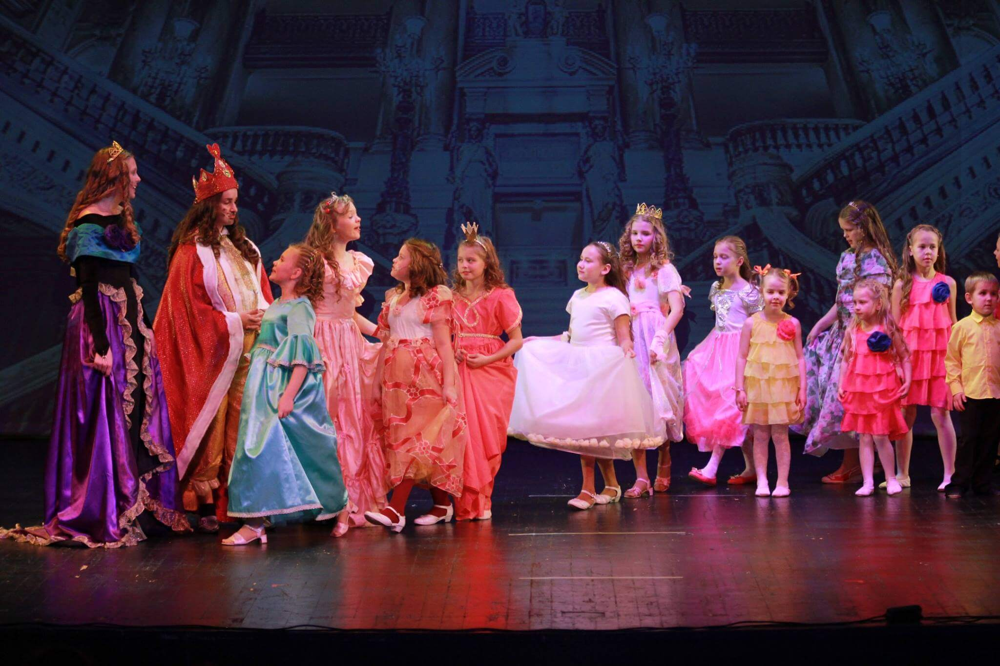
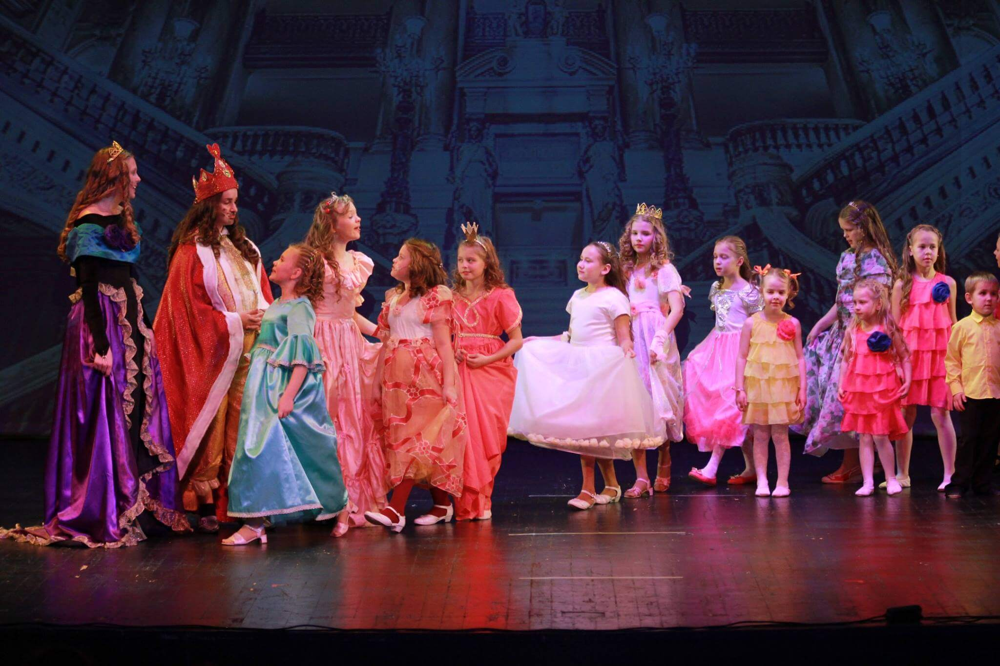
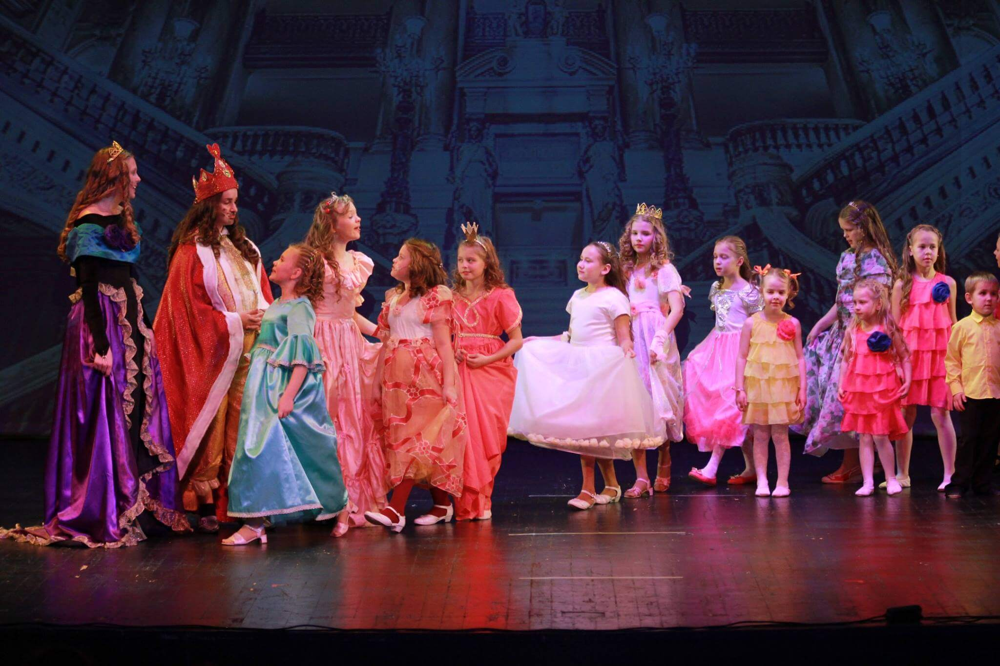

Laulustuudio Fa-diees on välja toonud juba 4 lastemuusikali:
Etendus „Pöial-Liisi“ oli Eesti Kultuurkapitali aasta teo nominatsioonis.
„Muinasjutt klaaskuulist“ pälvis aga üleriigilisel Laste- ja noorte muusikaliteatrite festivalil Grand Prix.
Kestus: 01:40
Muusikaline koguperelavastus kahes vaatuses viib meid muinasjutumaailma, kus kaunil printsessil on sünnipäev. Kokad on pingutanud kõigest väest, kauneimad kingitused on täitnud saalid, kuid printsessi salasoovid saab ellu viia vaid unehaldja kingitud klaaskuul. Selle klaaskuuli sees on peidus salasoovi rada. Sellel rajal saadab printsessi kass Lutsifer, on kurbus ja rõõmud. On onlased ja eiolelased, kadedused ja lahkused, suured unistused ja nende täitumised. Kaunis ja ehe muinasjutt tuletab suurtele ja väikestele meelde, mis elus tegelikult tähtis on.

Artikkel Tartu Postimees * 10. veebruar 2016
Üleriigilisel laste ja noorte muusikateatrite festivalil Salme kultuurikeskuses võitis peaauhinna Tartu laulustuudio Fa-diees trupp lastemuusikaliga «Muinasjutt klaaskuulist». Žürii otsuse kohaselt oli see kõige terviklikum lavastus. Lisaks peaauhinnale pälvisid auhinna trupi liikmed Reneli Husu rolli värvika lahendamise eest, Kristin Põder mitmekülgse artistlikkuse eest ning Kaspar Kiisk ja Mikk Kaasik nauditava koosmängu eest. Muusikali «Muinasjutt klaaskuulist» idee ja laulude autor on Sirje Toompere ning lavastaja Heli Ruus. Muusikat on juurde kirjutanud Ingrid Otti, orkestreerinud Kaido Otsing, tantsud seadnud Triin Põder, muusika salvestanud Elmet Neumann ja lavakujunduse projekteerinud Kerli Otti. Laulustuudio Fa-diees juht Ingrid Otti loodab lavastuse viia ka Eesti teistesse linnadesse.